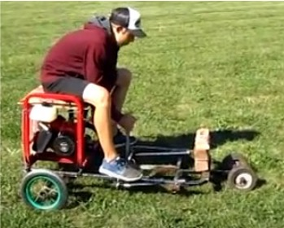
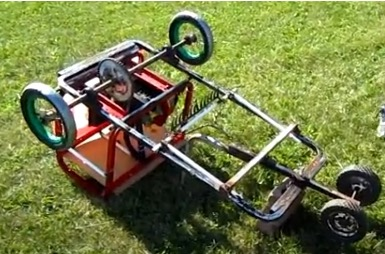

The Dune Buggy project highlights my ability to transform scrap materials into a fully functional off-road vehicle. Through hands-on learning, I developed skills in load-bearing design, gear ratios, and welding.


Design and Build Process
- Frame: Lightweight welded chassis built from repurposed metal pipes.
- Engine: Salvaged and modified 6.5 HP engine with a custom gear system.
- Suspension: Installed shocks to ensure stability on rough terrain.
- Steering: Simple and reliable mechanism designed using salvaged components.
Performance Metrics
- Top Speed: 40 km/h
- Weight: 150 kg
- Terrain Compatibility: Handles sand, dirt, and light gravel with ease.
- Build Time: 3 months from concept to completion.
← Back to Portfolio